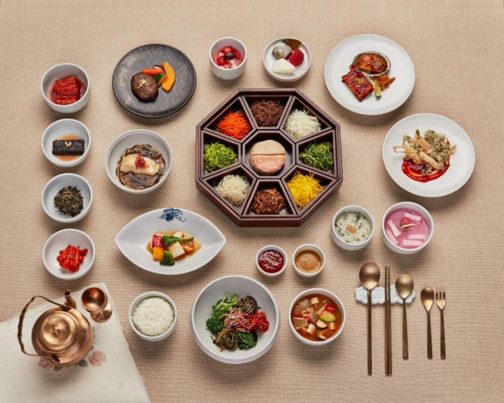

韓國｜Korea
必吃！韓國傳統美食（上）
每次看韓國電視節目，總是讓小編看的巴豆么，紅通通的辣炒雞排、噗滋作響的韓式烤肉、還有那入口即化的人蔘雞，光用想的都讓人垂涎欲滴...
每次看韓國電視節目，總是讓小編看的巴豆么，紅通通的辣炒雞排、噗滋作響的韓式烤肉、還有那入口即化的人蔘雞，光用想的都讓人垂涎欲滴… 口水可先不要留下來！就讓美食特派員小編我，幫你介紹韓國十大必吃美食，還要告訴你韓國特有的飲食文化。

韓定食
韓定食是源自於朝鮮時代的宮廷料理，有各式菜色擺滿整個桌面，除了有主菜之外，更有多到數不完的各式小菜，用蒸、煮、烤、炸等料理方式來進行烹調，讓菜色豐富無比。從開胃菜到主食，最後還有甜點，雖然每一樣的份量不多，但全部吃下來，可是會讓你飽到說不要再吃了！由於是來自古代宮廷的料理因此價格不斐，但也有些店家提供平價的韓定食，兩者在擺的餐盤數量上可是沒有太大的差異，但價格會反映在食材上，通常價格高的會有較多海鮮及肉類，平價的則是會以野菜類的小菜為主。
全州拌飯
這可是頂港有名聲，下港有出名的韓國傳統美食。其實在韓國，四處都有賣拌飯的店家，但最出名的其實是全州拌飯，有我們耳熟能詳的石鍋拌飯，用石鍋裝著熱騰騰的穀米飯，上面放著各式各樣的野菜以及鮮紅的辣椒醬，再放上一顆生蛋黃，整個就讓人口水快流下來了！還有銅碗拌飯，有些店家會給你一個銅碗，然後附上許多各式的野菜、辣椒醬、香油，讓你製作一碗有自己風格的拌飯，也不用怕吃到自己不想吃的東西。另外若是敢吃生牛肉，可以嘗試有名的生牛肉拌飯，醃漬過的生牛肉拌在飯裡，其實別有一番滋味。
人蔘雞
對韓國有一定了解的人，都知道韓國人喜歡在「夏天」吃人蔘雞，尤其是在三伏天的日子，三伏天可分為初伏、中伏、末伏是一年之中最炎熱的時候，韓國人認為以熱治熱對身體最好，因此會在夏天或三伏天去吃人蔘雞進補。而好吃的原因在於選用童子雞，因此即使經過熬煮肉質也不會變硬，而是入口即化，再加上雞中塞入了人蔘、糯米、栗子還有其他材料，更增添了雞湯的風味。